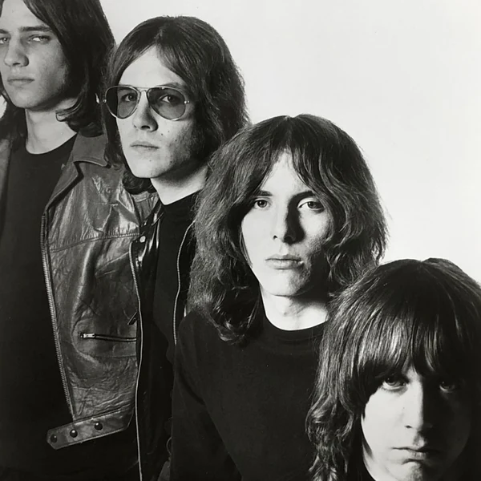
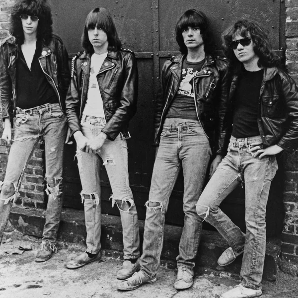
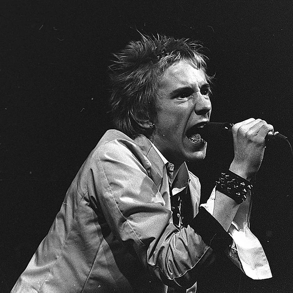
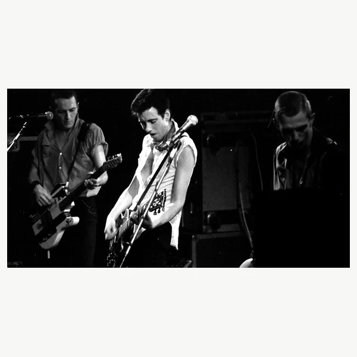
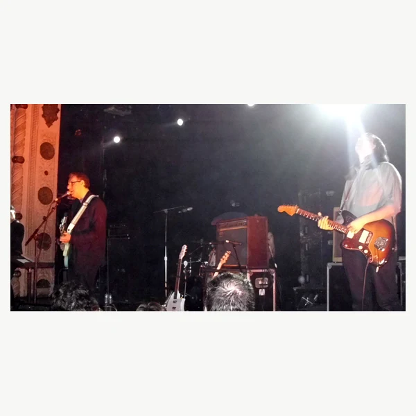
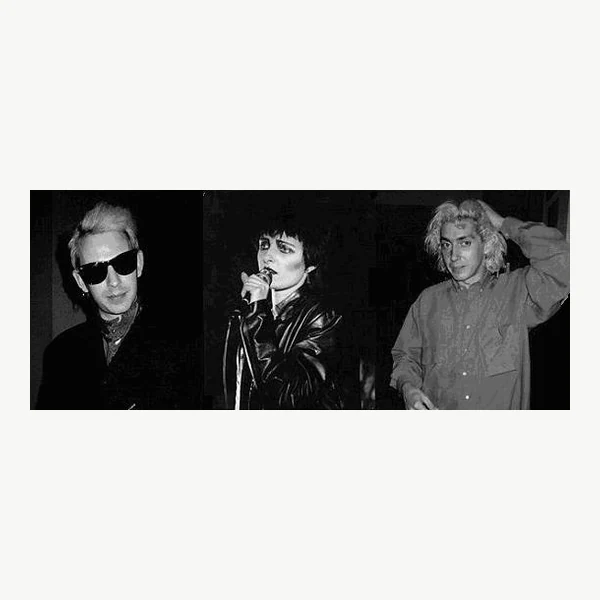
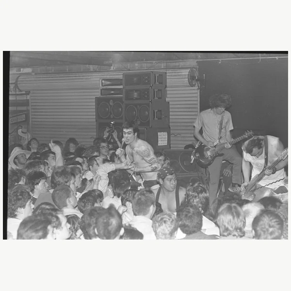
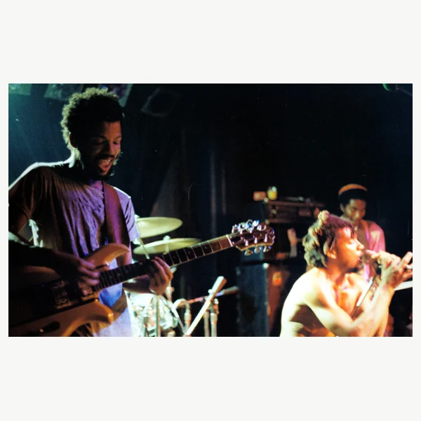

Punk is a broad movement in Rock music that took shape during the 1970s, especially in the United States and Britain. Early Punk Rock was often fast and direct, with short songs that did not leave much room for elaborate instrumental displays. Just as important was the belief that people could make music without waiting for approval from established bands, record companies or anyone else claiming to set the standard. That helped Punk develop a culture of independent venues and self-published material alongside the music itself. The sound did not remain fixed for long. Some musicians pushed it towards greater speed and aggression, while others began experimenting with unusual rhythms and production. These approaches could sound very different, yet they shared a willingness to question how Rock was supposed to be made and presented. Punk has always involved more than three chords and a bad attitude, although those have occasionally been enough to get things started.
Punk was an insult long before it was a genre name. In American slang, it could suggest someone young, troublesome or not worth taking seriously. Music writers began using it in the early 1970s for rougher forms of Rock that seemed out of step with polished mainstream production. As scenes developed in New York and London, the word became more closely associated with a particular musical and cultural movement. Independent music magazines helped spread the label, even though musicians were not always eager to adopt it themselves. The change in meaning was part of the appeal. A word meant to dismiss people became something those same people could use to identify themselves. It was a reasonably effective way of making an insult lose its power.
The groundwork for Punk was laid by raw forms of Garage Rock during the 1960s and early 1970s. By the middle of the 1970s, a recognisable scene had formed around small venues in New York, while London developed its own version in a period of economic frustration and political tension. British Punk drew much more public attention, partly because its confrontational image made such good newspaper material. But the music also travelled through local networks of bands, shops and independent labels, allowing scenes to grow well beyond either city. In the late 1970s, Post-Punk moved towards experimentation while Hardcore Punk pushed towards faster and more intense performances. Punk later fed into Alternative Rock and other genres without disappearing as an independent culture. Some branches became commercially successful, which brought an old argument back to the surface. How independent can a movement remain once major companies learn how to market its rebellion? Punk has spent decades arguing about the answer.
Early Punk Rock generally favoured a hard guitar sound and a driving beat, with short songs that reached the point quickly. The vocals were often more concerned with urgency than polish, which suited lyrics about everyday frustrations and the people or institutions causing them. None of this meant that Punk musicians were required to be technically unskilled. The point was that technical display did not have to come before the song. Many early recordings also sounded rough because bands were working with limited budgets or deliberately rejecting the smooth production associated with mainstream Rock. Later branches changed the formula considerably. Hardcore Punk increased the pace, while Post-Punk opened up the rhythm and arrangement. Some forms are melodic and carefully produced, while others remain abrasive and unpredictable. The family resemblance lies as much in the direct approach to making music as it does in any particular guitar tone.








Punk challenged the idea that popular culture had to be handed down by large companies or established professionals. Independent labels and small venues gave people ways to organise their own scenes, while photocopied magazines let audiences argue back instead of simply accepting what the music press told them. In Britain, Punk also became part of organised opposition to racism and the far right, including concerts that brought Punk and Reggae audiences together. Its politics were never entirely consistent, however. Some scenes welcomed women and outsiders while others reproduced the same sexism or intolerance they claimed to reject. That contradiction became a reason for later feminist Punk movements to demand more space and control. Punk's do-it-yourself approach also influenced independent publishing and community organising outside music. Eventually, its clothing and imagery were turned into commercial products, which was hardly surprising to anyone familiar with the music business. Even so, the lasting contribution was more practical than fashionable. It showed people they could build a cultural scene themselves rather than wait to be invited.